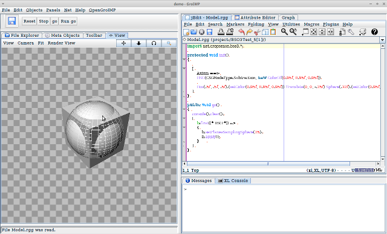

<link rel="stylesheet" href="bso3.css" type="text/css">

<script type="text/javascript" >
	var i = 0;
	var baseDir = "imgWalkthrough/";
	var filenames = ["001.png", "002.png", "003.png", "004.png", "005.png", "006.png"];
	var annotationTexts = ["Having created our script, we see the sphere inside the box.",
	 							   "Hitting 'go' starts the CGS operation.",
	 							   "When the operation finishes, we see the original objects still in the scene.",
	 							   "Selecting 'Graph'->'Redraw' we first redraw the parse-tree to accomplish a nicer layout,",
	 							   "then we select the first element beneath the BSO operator and hit delete.",
	 							   "Now we can observe the leftover result of the CSG operation."];
	
	function moveForward()
	{
		if ( i < (filenames.length-1) )
		{
			i++;		
			setImageIdx(i);	
		}	
	}	
	
	function moveBackward()
	{
		if ( i > 0 )
		{
			i--;			
			setImageIdx(i);	
		}	
	}
	
	function setImageIdx(IDX)
	{
		document.slideshowItem.src = baseDir + filenames[IDX];
		document.getElementById('annotation').innerHTML=annotationTexts[i];
	}
</script>

<header>
    <h1>BSO3</h1>
    <h3>:: a CSG-plugin for the GroIMP modelling-platform ::</h3>
</header>

<nav>
    <ul>
        <li><a href="index.html" onMouseOver="document.menuentry1.src='img/001b.png';" onMouseOut="document.menuentry1.src='img/001a.png';">about</a>
        </li>
        <li><a href="usage.html" onMouseOver="document.menuentry2.src='img/002b.png';" onMouseOut="document.menuentry2.src='img/001a.png';">usage</a>
        </li>
        <li><a href="walkthrough.html" onMouseOver="document.menuentry3.src='img/003b.png';" onMouseOut="document.menuentry3.src='img/003a.png';">walkthrough</a>
        </li>
        <li><a href="getting.html" onMouseOver="document.menuentry4.src='img/004b.png';"  onMouseOut="document.menuentry4.src='img/003a.png';">getting BSO3</a>
        </li>
        <li><a href="thanks.html" onMouseOver="document.menuentry5.src='img/005b.png';" onMouseOut="document.menuentry5.src='img/005a.png';">thanks</a>
        </li>
        <li><a href="links.html" onMouseOver="document.menuentry6.src='img/006b.png';" onMouseOut="document.menuentry6.src='img/005a.png';">links</a>
        </li>
    </ul>
</nav>

<main role="main">
    <article>
        <h2>walkthrough</h2>
        <h3>:: a step-by-step guide ::</h3>
		  <p>Here we will have a step-by-step guide showing you all the steps from the tutorial under <a href="usage.html">usage</a>.
		  
		  <p>
				<center>
					<br>
					<div id="annotation">Having created out script, we see the sphere inside the box.</div><br>
					<h1><a href="#" onClick="moveBackward();">:: <-- ::</a>&nbsp;&nbsp;&nbsp;&nbsp;<a href="#" onClick="moveForward();">:: --> ::</a></h1>
				</center>				
		  </p>
		  
		  <p>You may download the demo-file <a href="demo.gsz">here</a>.
		  </p>
    </article>
</main>